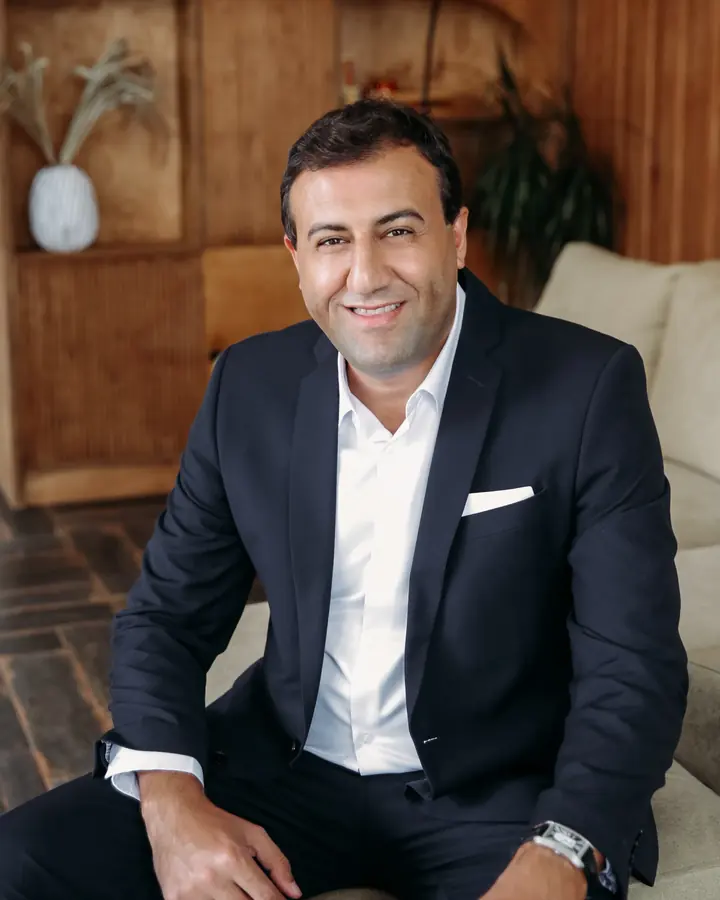

אודות סופיה מדיקל
רפואה מתקדמת, צוות מומחים ופתרונות מותאמים אישית לשיפור תפקוד ובריאות המטופלים

סופיה מדיקל: רפואה מתקדמת, שיקום, טיפול בכאב והפרעות שינה
סופיה מדיקל הוא מרכז רפואי פרטי ומתקדם המתמחה בשיקום אמבולטורי, בטיפול בכאב ובאבחון הפרעות שינה אצל מבוגרים וילדים, בהובלת ד"ר עלא מחאמיד, רופא בכיר, מומחה ברפואה פיזיקלית ושיקום ומנהל השירות ויחידת הפרעות השינה במרכז הרפואי לוינשטיין.
המרכז משלב רפואה מבוססת מדע, אבחון מתקדם וטכנולוגיות חדשניות לשיקום, להפחתת כאב, שיפור תפקוד והשבת איכות החיים.
כל תוכנית טיפול נבנית באופן אישי בהתאם למצבו הרפואי של המטופל, למטרות השיקום וליעדיו התפקודיים.
מרכז לרפואה מתקדמת, שיקום והפרעות שינה
-
שיקום רפואי מותאם אישית
המרכז שם דגש על שיקום רפואי מקצועי ומותאם אישית, הכולל ליווי רציף של הצוות הרב תחומי במטרה לשפר את התפקוד הגופני, הקוגניטיבי, התקשורתי והנפשי, להפחית כאב, לשפר יציבה וניידות ולהחזיר את המטופלים לחיים פעילים ועצמאיים.
למידע נוסף על רפואה שיקומית מתקדמת -
טכנולוגיה ומכשור מתקדם
המרכז עושה שימוש בטכנולוגיה רפואית מתקדמת ובמכשור חדשני לצורך אבחון מדויק, בקרה טיפולית ושיקום יעיל. השילוב בין ידע קליני נרחב, עבודת צוות מתואמת וחדשנות טכנולוגית מאפשר מתן טיפול איכותי, מדויק ובטוח לכל מטופל.
למידע נוסף על שיקום נוירולוגי עם recoveriX -
רפואת שינה
המרכז מתמחה גם בתחום רפואת השינה, ומציע אבחון מקיף, טיפול מותאם וליווי רפואי רציף לשיפור איכות השינה, הפחתת עייפות יומית, ויסות מחזורי שינה וערות והשגת שינה טבעית ובריאה יותר.
למידע נוסף על אבחון וטיפול בהפרעות שינה -
מעבדת שינה ובדיקות ביתיות
בנוסף לשירותים בתחומי השיקום, במרכז מתבצעות כל סוגי בדיקות השינה, לרבות בדיקות שינה ביתיות בהתאמה אישית למטופל, וכן פועלת מעבדת שינה מתקדמת לביצוע בדיקות שינה במכון, הכוללות EEG וכל הפרמטרים הפיזיולוגיים של השינה לצורך אבחון מדויק ומקצועי של כלל הפרעות השינה.
למידע נוסף על מעבדת השינה
בסופיה מדיקל אנו מאמינים כי השילוב בין מומחיות רפואית, צוות רב תחומי וטכנולוגיה מתקדמת הוא המפתח לשיקום מלא ולשינה מאוזנת, כדי שכל מטופל יוכל לשוב לחיים פעילים, רגועים ובריאים יותר.
האני מאמין של ד"ר עלא מחאמיד
מאחורי כל ממצא רפואי עומד אדם, עם כאב, סיפור ותקווה. תפקידי כרופא הוא לא רק לטפל, אלא להבין, להקשיב ולהחזיר את האיזון בין הגוף לנפש.

לאורך שנות עבודתי כרופא שיקום וכמומחה לרפואת שינה, למדתי כי המפגש עם המטופל הוא הרבה מעבר לבדיקות ולמכשירים.
הרפואה בעיניי היא קודם כל הקשבה: לראות את האדם שמולי, להבין את סיפורו וללוות אותו במסע חזרה לחיים מלאים, פעילים ומשמעותיים.
אני מאמין כי שיקום אמיתי מתחיל באמונה באדם: ביכולת שלו להשתקם, לשוב לעצמאות ולגלות מחדש את כוחותיו.
כל אדם זכאי לטיפול מקצועי, מכבד ושוויוני ללא הבדל דת, גזע או מין, תוך הערכה אמיתית לערכו האנושי ולסיפור חייו.
במרכז סופיה מדיקל אנו משלבים רפואה מתקדמת עם אנושיות: צוות רב תחומי הפועל יחד, מתוך אחריות, שיתוף פעולה ומסירות.
המטרה שלנו איננה רק לשקם את הגוף או לשפר את השינה, אלא להשיב למטופל את הביטחון, התקווה והאמונה בעצמו.
הרפואה האמיתית בעיניי אינה מסתכמת בריפוי הגוף, אלא ביכולת לראות את האדם השלם, להחזיר לו את הכוחות, ואת האמונה בחיים עצמם.
ד"ר עלא מחאמידמומחה ברפואה פיזיקלית ושיקום ומומחה להפרעות שינה
השאירו פרטים ונחזור אליכם
קיימים הסדרים עם כללית מושלם, BWell ומגדל לייעוץ רפואי בתחום השיקום וטיפול בכאב